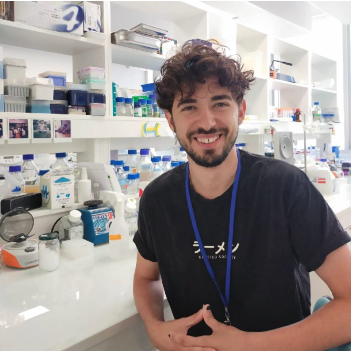

<div id="script-data" data-scripts="">
    <div style="
        display: flex;
        justify-content: center;
        align-items: center;
        height: 100vh;
        width: 100%;
        margin: 0;
        padding: 0;
    ">
        <div class="content" style="
            font-family: 'Courier New', monospace;
            background-color: white;
            color: black;
            width: 40%;
            text-align: justify;
        ">
            
            <h1>About</h1>
            <p> Hola! I'm Fran Quero, a passionate advocate of open-source hardware and wetware, striving to create accessible 
                and production-ready tools that fuel biotechnology research for everyone. I have special focus on exploring how
                to enable distributed production of these tools, and, as a part of this exploration, I have created this platform 
                where you can geek around some designs and adquire the ones in stock. 
                As I am just starting out on this new venture please be patient and kind:)
            </p>
        </div>
    </div>
</div>
